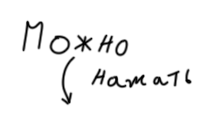

Я являюсь кандидатом в председатели парламента школы. На этом сайте вы найдёте всю
информацию, которая расскажет вам о мне и о моих целях.
Председатель парламента является лицом школьного самоуправления в школе, призван активно содействовать становлению сплоченного коллектива как действенного средства идейно-нравственного воспитания личности, формированию у всех учащихся школы сознательного и ответственного отношения к своим правам и обязанностям, определенным Конституцией РФ, основами законодательства РФ и Уставом школы.
Каждый кандидат выдвигает свои варианты улучшения жизни в школе, которые он хочет реализовать. Порой придумать оригинальную идею сложно и требует долгого обдумывания в той или иной степени в зависимости от сложности цели, не говоря о попытке её реализовать.
В одиночку у меня врядли получиться придумать множество идей для улучшения нашей школы, так что я собираюсь сделать доску (либо сайт), где вы сможете написать предложения, которые я в дальнейшем рассмотрю и выведу на уровень администрации школы.
Я хочу структурировать систему учеников. Например, в создании сайта мне понадобились качественные фото с хорошо подобранным ракурсом нашей школы. Я попрошу сделать пару фото на хорошую камеру нашу медиа-группу школы. Если мне понадобиться помощь в плане креатива, я попрошу креативную группу придумать что-то. Также можно создать кружки программирования, рисования, музыки и так далее, но только после опросов школы для выяснения потенциальных участников.
Я могу заниматься созданием объявлений и вывесок о осенних ярмарках, результатах олимпиад и т.д. для школы, которые будут красиво выглядеть. Также существует такая несбыточная мечта как создание сайта школы, но это ещё пока лишь влажные мечты.
Как человек я имею различные увлечения и вот основные из них:
Спортивный конечно сильно сказано...
Фотошоп, немного программирования html, css, python, java. Ну и всё
Коммуникативный и всё такое. Но умение говорить должно быть в совокупности с умением слушать.